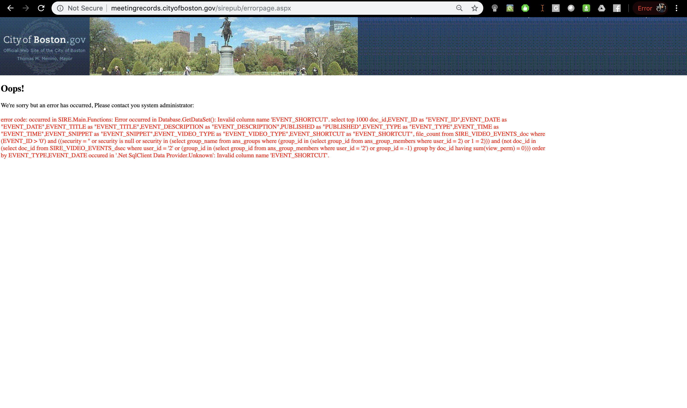
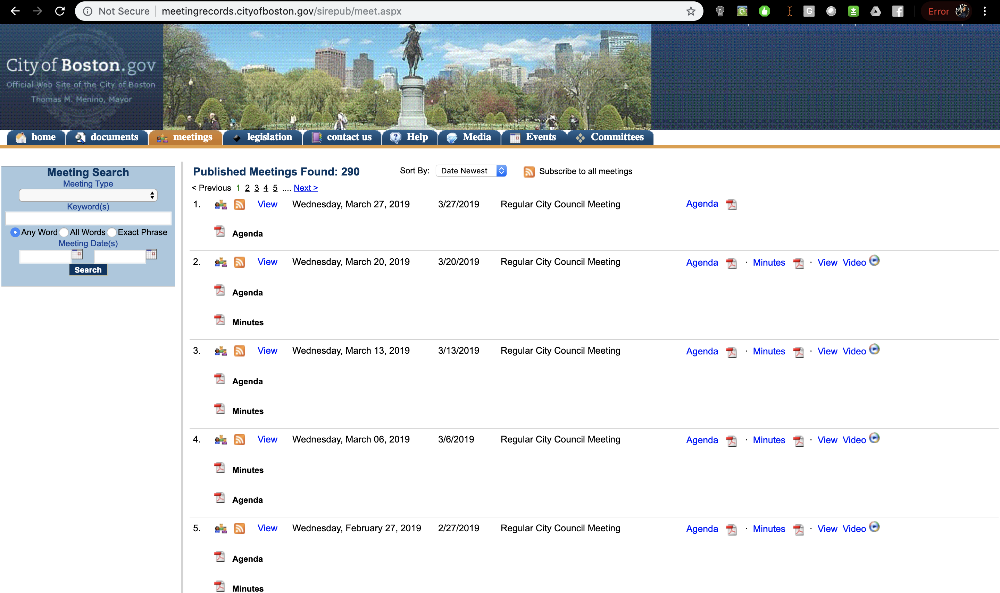
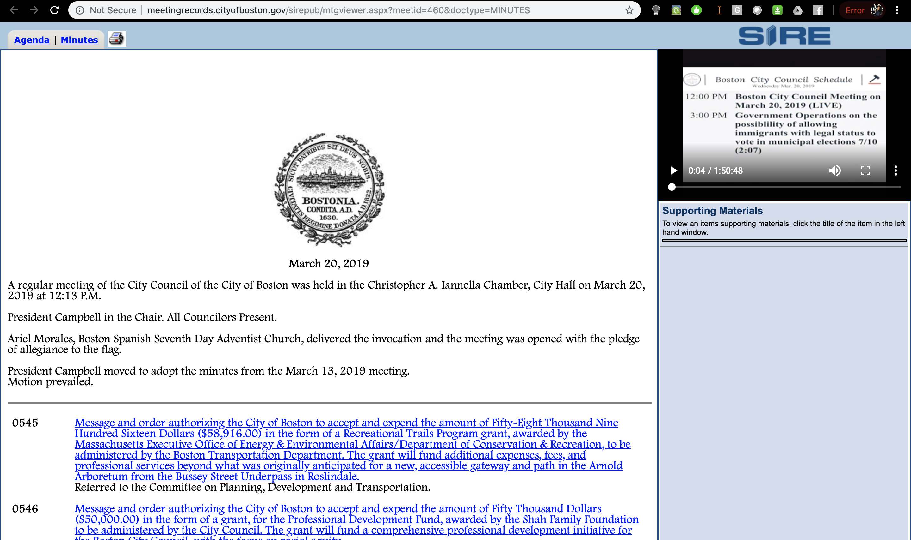
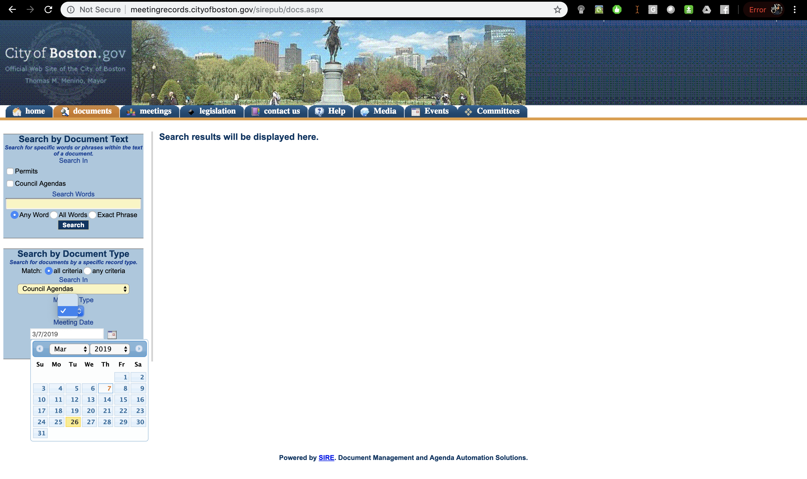

This is SIRE, or as the Boston City Council calls it, my "one stop shop for location documents and information on line." Not only is this written explicitly as two words - on line ¬- but SIRE is the councils primary window into participatory local governance. I personally like to stay in touch with issues being discussed at the local level, and I have to say that SIRE has been awfully disappointing. By inspection (and ever interaction I have had with it afterwards), SIRE only seems to be useful if you already know exactly what you're hoping to find. For exploration and discovery, however, using this platform is enormously challenging and generally unenjoyable.
As a local user, I expect to be able to first see when council meetings are scheduled, what issues are being discussed and how I may participate, if for example, it is a hearing and there is an opportunity for public testimony. Naturally, I am drawn to the calendar.
This is the calendar:
Not only does it not load, but the error message runs counter to the user's expectations and deepens their rift with engagement from the platform. The error specifically reveals the search query used to surface information from SIRE's database which should appear to an engineer in the error logs, but not to a layperson who simply needs to know that there was an error loading the page. The error page offers no exit, no redirect back to the home, and strips the navigation menu away increasing friction and frustration.
Naturally, I am drawn then to see the "Meetings" page.
Because the Council regularly hosts meetings at a standing frequency, every single meeting on the page is titled "Regular City Council Meeting" where the only distinguishing feature is the date of each meeting. But scrubbing through each one is an extremely frustrating task, and it is hard to actually understand the contents of each without going through them, one at a time. The minutes and agenda themselves are presented in a font that is difficult to read because the line height makes the text stack closely, and because each talking point may link out to other text, most of the documents are left in blue with underlines, exacerbating the legibility problem.
Here's an example:
And finally, on the topic of discoverability, if I am interested in specific issues, I am required to search using a highly constructed panel that is familiar to me, as an engineer, because it mirrors common SQL search queries, but is not easy to use if I do not know what I am looking for or am not familiar with SQL.
Here is the search feature as it is currently implemented:
The interface itself is burdensome to me, especially as a designer. The titles of the navigation bar are inconsistently capitalized, the graphics are low resolution and are reminiscent of the early 2000s (though maybe digital brutalism is having its own comeback). Former Mayor Menino's (RIP) name is still at the top from his 2014 term. The content on the pages is not helpful, specifically the Events/Media page that load errors, and the Help page which was never fully written (it currently says "This site is intended to provide public access to County documents including ...etc."). As a citizen who may be disengaged from events, SIRE does not make finding interest in participating or even navigating the slew of meetings that are held easy or enjoyable. SIRE is merely an interface to a database that lacks consideration of the user experience. It is frustrating to use, and builds on the perceptions (which are not necessarily true) that (1) the government is not competent and ill-equipped to handle technology, and (2) the government does not understand its users. Both are damaging to public trust, and improvements in SIRE are critical because SIRE is meant to be a "one stop shop."
While the Boston city government has revolutionized its entire technology stack over the last few years, most notably in 2016 when it launched a new website, new APIs in its OpenGov initiative and an Innovation Department of its own, the City Council did not catch up. The boston.gov site is maintained by a team that works for the Mayor's office, while the City Council does not. Because of this separation of powers, the legal drafting authority of the City Council counterbalances the Mayor's power and informs the Mayor's initiatives. While these checks and balances are incredibly central to our pillars of democracy, they limit the resources available to the council and have left it severely behind. The Boston Government also has its own web presence for public notices and hearings, which is extremely more navigable and even has its own API endpoint. But to citizens, and myself, knowledge of these separate funding structures should not be expected. Citizens should not have to know how their government is structured to justify searching for meetings in two places, and following two entirely interfaces that imply that one is out of service (even though both are very much valid and active, and both serve non-overlapping roles).
To this effect, I have focused my thesis on proposing a new alternative for SIRE and am excited to see it update someday to reflect its potential and the richness that the council offers to local governance. Learn more about it here and here.